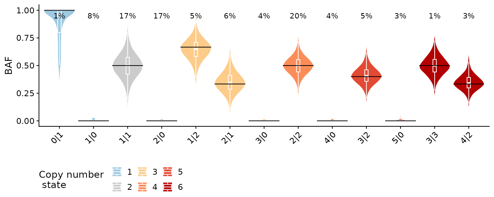
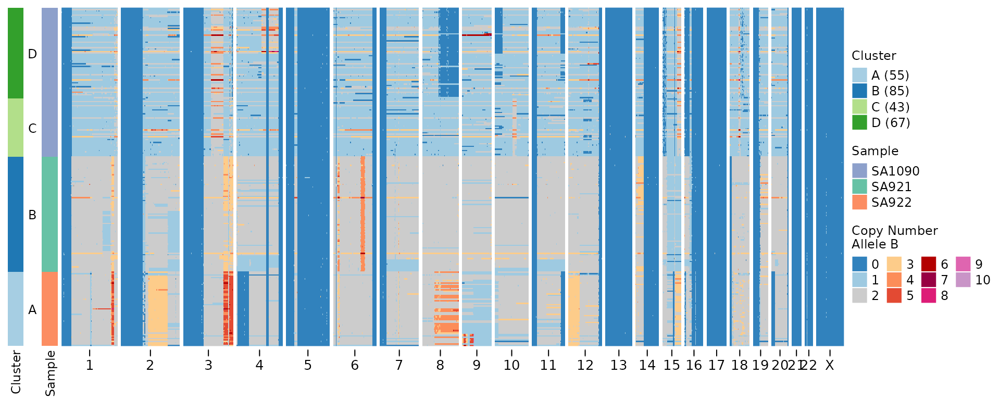
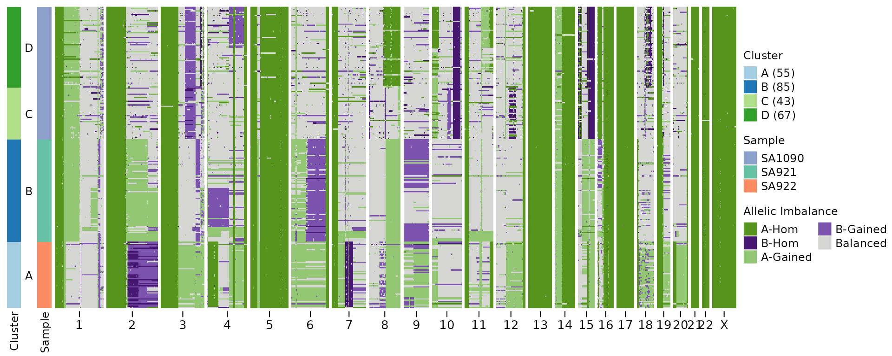
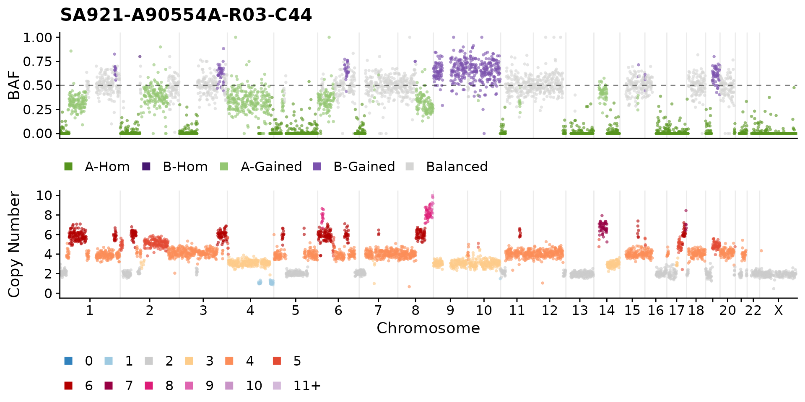
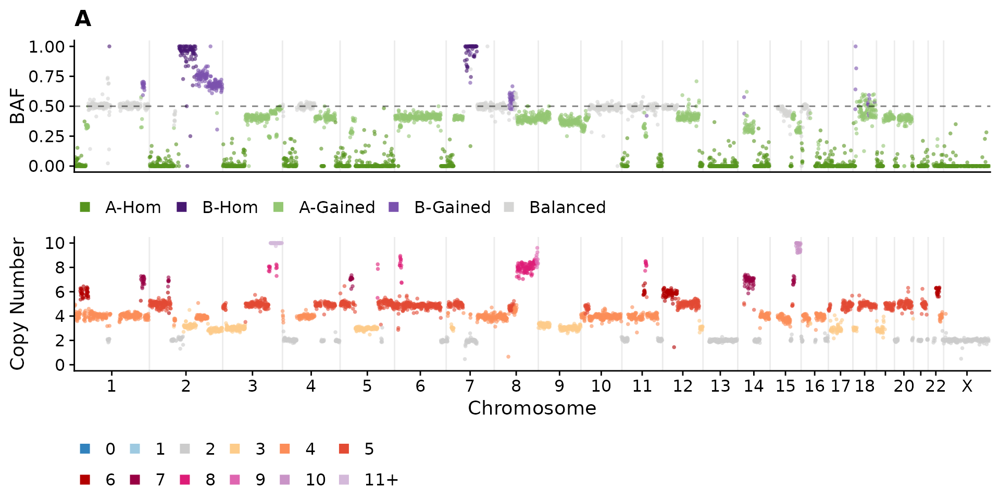
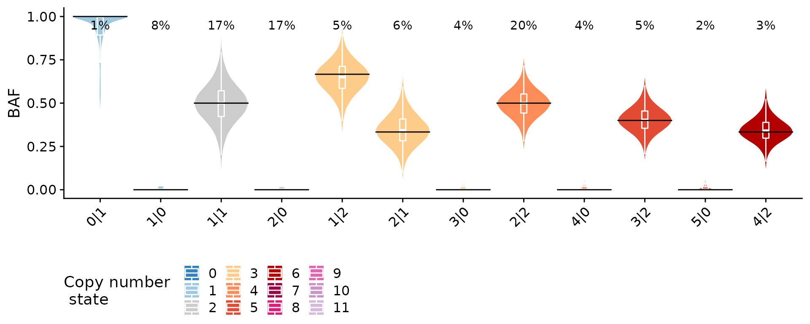
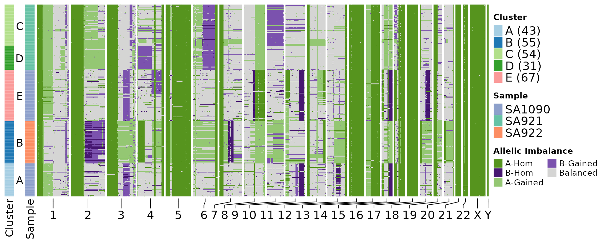
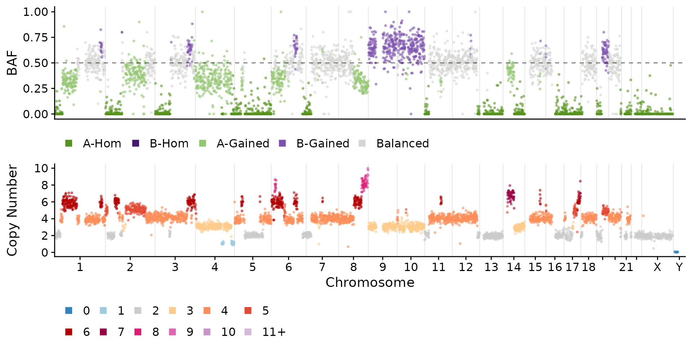
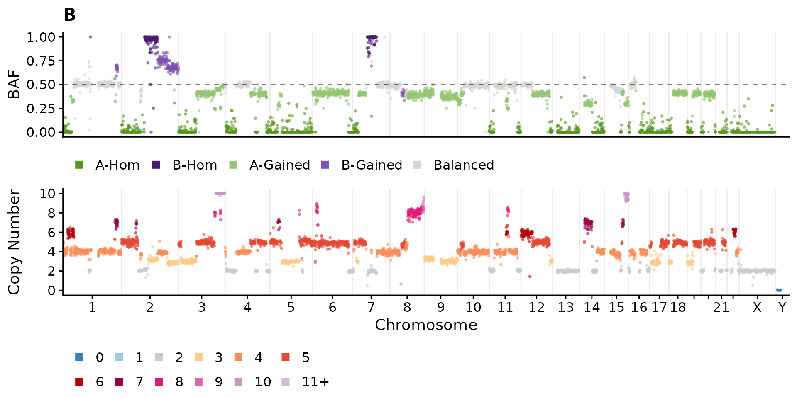
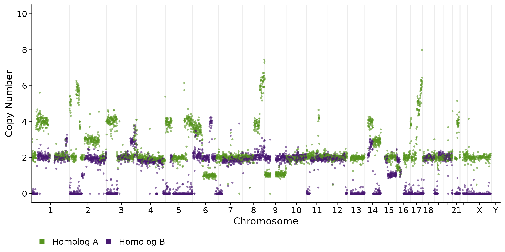

Allele Specific Copy Number Inference
ASCN.Rmd
library(signals)Background
This vignette illustrates how to perform allele specific copy number inference with DLP+ data. However the method should be generally applicable to any single cell copy number method. The input requirements are discussed below.
Data
The data needed to perform the allele specific copy number inference are binned copy number data and cell specific haplotype calls. The copy number data and the haplotype data should use the same bins.
A small test data set of 250 cells is provided with the package, we’ll load this data and inspect these 2 dataframe.
head(CNbins)
#> chr start end reads copy state cell_id
#> 1 1 2000001 2500000 536 2.960868 2 SA921-A90554A-R03-C44
#> 2 1 3000001 3500000 499 2.603584 2 SA921-A90554A-R03-C44
#> 3 1 4000001 4500000 569 2.216388 2 SA921-A90554A-R03-C44
#> 4 1 4500001 5000000 524 2.039672 2 SA921-A90554A-R03-C44
#> 5 1 5000001 5500000 576 2.210792 2 SA921-A90554A-R03-C44
#> 6 1 5500001 6000000 516 2.028686 2 SA921-A90554A-R03-C44The haplotype data comes in long format, but the package requires data in wide format so we will use the helper function format_haplotypes_dlp to convert the data to the correct format, this function will also remove any bins present in the haplotypes data frame that is not present in the CNbins data frame.
haplotypes <- format_haplotypes_dlp(haplotypes, CNbins)
head(haplotypes)
#> cell_id chr start end hap_label allele1 allele0
#> 1 SA1090-A96213A-R20-C13 1 2000001 2500000 101 0 3
#> 2 SA1090-A96213A-R20-C13 1 2000001 2500000 104 0 1
#> 3 SA1090-A96213A-R20-C13 1 2000001 2500000 106 0 3
#> 4 SA1090-A96213A-R20-C13 1 2000001 2500000 108 0 4
#> 5 SA1090-A96213A-R20-C13 1 2000001 2500000 112 0 15
#> 6 SA1090-A96213A-R20-C13 1 2000001 2500000 113 0 1
#> totalcounts
#> 1 3
#> 2 1
#> 3 3
#> 4 4
#> 5 15
#> 6 1Inference
The output of signals is allele specific states per bin. signals has 2 options to perform this inference, the first, callAlleleSpecificCN, infers allele specific states using mirrored B allele frequencies as is typically done in bulk whole genome sequencing. This infers states of the form A|B where B < A. The second option, callHaplotypeSpecificCN takes into account the possibility that different alleles may be lost or gained in different cells. In order to identify these events, signals clusters cells and infers the haplotype phase based on regions within clusters that have large allelic imbalance. The output for this method therefore allows for B>A.
callAlleleSpecificCN
ascn <- callAlleleSpecificCN(CNbins, haplotypes)As a sanity check we can plot the B allele frequency (BAF) as a function of inferred state. We would expect to see a distribution around the expected value which is exactly what we see below.
plotBAFperstate(ascn, maxstate = 10)
Now we can plot the copy number heatmaps. First we’ll plot the heatmap based on copy number states. We can provide the plotHeatmap function with a tree in newick format to plot an ordered heatmap and/or a dataframe with cluster assignments. By default the plotHeatmap function does some clustering using hdbscan if neither of these is provided.
cl <- umap_clustering(ascn$data)
plotHeatmap(ascn,
plotcol = "state",
clusters = cl$clustering,
tree = cl$tree,
reorderclusters = TRUE, #order according to tree
plottree = FALSE) #do not plot the tree but keep the ordering )
Now we can plot some heatmaps to visualize the allele specific state. This heatmap plots the minor copy number state.
plotHeatmap(ascn, plotcol = "Min",
clusters = cl$clustering,
tree = cl$tree,
reorderclusters = TRUE, #order according to tree
plottree = FALSE) #do not plot the tree but keep the ordering )
Discrete representation of allelic imbalance:
plotHeatmap(ascn,
plotcol = "state_phase",
clusters = cl$clustering,
tree = cl$tree,
reorderclusters = TRUE, #order according to tree
plottree = FALSE) #do not plot the tree but keep the ordering )
There are also some function to plot per cell BAF and state plots. You can specify a cell, or the default will take the first cell in the data frame.
plotCNprofileBAF(ascn)
Here we’ll plot an equivalent plot merging data across cell clusters using the utility function consensyscopynumber. Here, the cell_id column becomes the
consensus_clusters <- consensuscopynumber(ascn$data, cl = cl$clustering)
plotCNprofileBAF(consensus_clusters, cellid = "A")
The object returned by the inference function is of type ascn, if you want to pull out the data to use in your own scripts you can just do ascn$data. This will return a data.frame similar to the input data frames but with additional columns specifying the allele specific states.
callHaplotypeSpecificCN
Now we’ll do the analysis that phases haplotypes across cells.
hscn <- callHaplotypeSpecificCN(CNbins, haplotypes)We’ll now generate the same plots as before. We can see in the BAF per state plot that we now observe states with BAF > 0.5 meaning that we see different alleles gained or lost in different cells.
plotBAFperstate(hscn, maxstate = 10)
In the allelic imbalance heatmap we can see that some cells have gained the “B” allele and others the “A” allele resulting in imbalance spanning from 0 to 1.
In the discrete version of this plot we see similar patterns.
plotHeatmap(hscn, plotcol = "state_phase",
clusters = cl$clustering,
tree = cl$tree,
reorderclusters = TRUE, #order according to tree
plottree = FALSE) #do not plot the tree but keep the ordering 
plotHeatmap(hscn, plotcol = "Min",
clusters = cl$clustering,
tree = cl$tree,
reorderclusters = TRUE, #order according to tree
plottree = FALSE) #do not plot the tree but keep the ordering 
plotCNprofileBAF(hscn)
consensus_clusters <- consensuscopynumber(hscn$data, cl = cl$clustering)
plotCNprofileBAF(consensus_clusters, cellid = "B")
An alternative plotting style is to plot the copy number of the individual copy number.
plotCNprofileBAF(consensus_clusters, cellid = "C", homolog = TRUE)